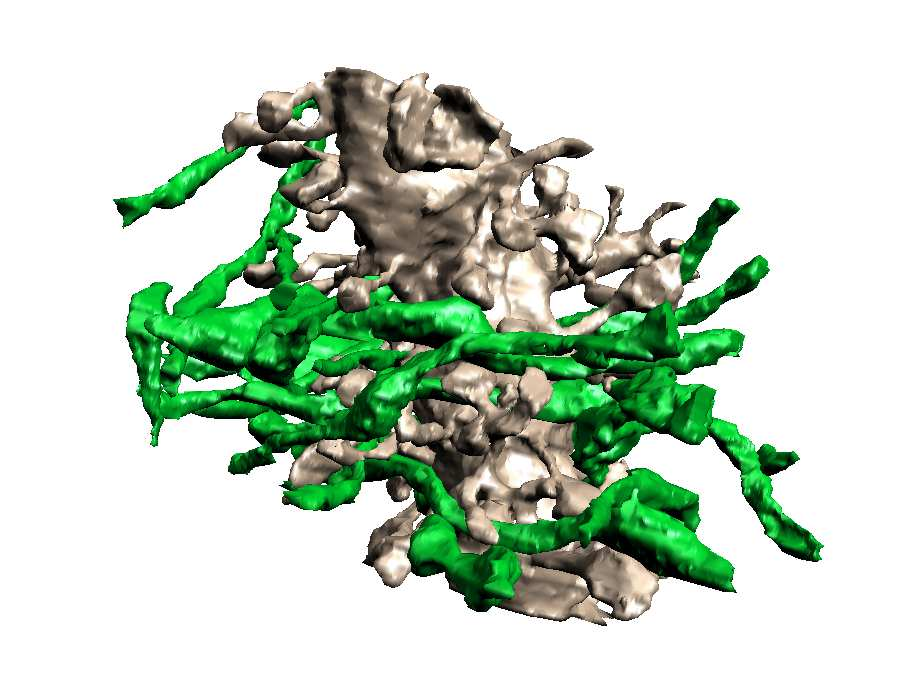
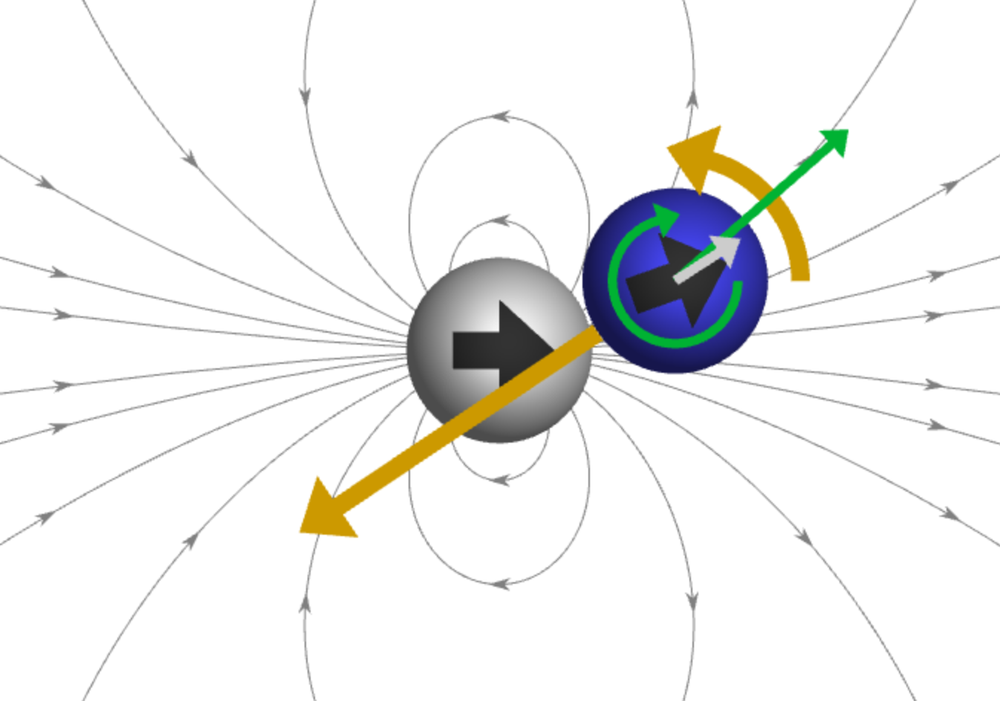
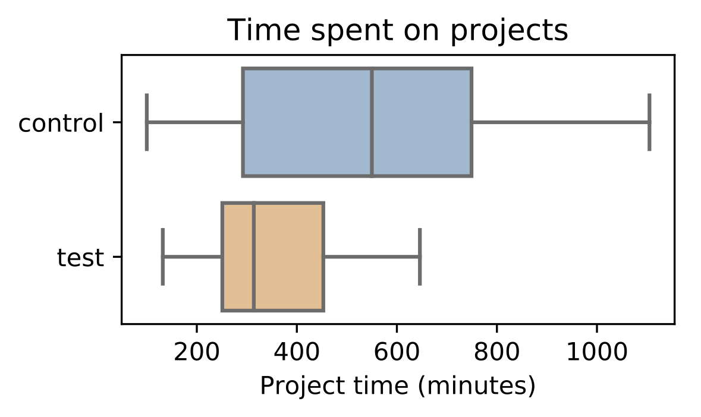

Research Projects
|  |
Neuron Structure and Function at the NanoscaleUsually we see pictures of brain neurons that look like spindly octopus. But if you zoom in (a lot) to the branching structures you see that the axons and dendrites are anything but smooth. They are chock full of "spine heads", "boutons" and crazy twists and turns. For years, researchers have been asking why the cells responsible for inventing the light bulb and solving Fermat's Last Theorem look more like the Creature from the Black Lagoon than anything. And more importantly, what effect does their complex shape have on our thought processes? What is it about a malformed synaptic cleft that makes you forget to pick up a gallon of milk on the way home? |
|  |
Magnet SimulationGiven two magnets in proximity to each other and in the absence of external forces, what is their spatiotemporal behavior relative to each other? We have derived the governing equations and written simulation software to answer these questions and which have led to some beautiful discoveries.
|
|  |
Computer Science EducationMuch as we like to think otherwise, Computer Science Education is just not on the front burner for cash-strapped, rural high schools. We have embarked on a quest to create curricula and software tools that under-funded high schools can deploy that will enable a respectable Computer Science education with little overhead or operating costs. We call our curriculum and software Phanon (Programming Hanon). |